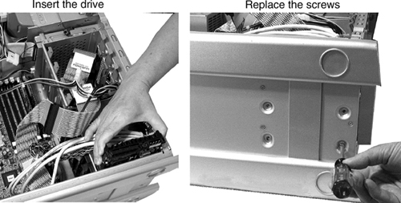

Remove the three drive screws from the storage in the system chassis ( Illustration 10).
Insert the drive.
Install the screws, attaching the drive directly to the bottom floor of the workstation. No drive rails are used.
Illustration 11: Installing a fifth SCSI drive
